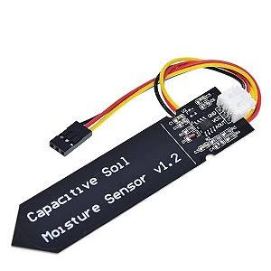
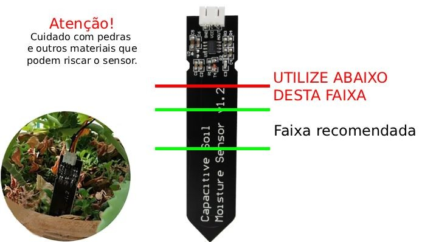
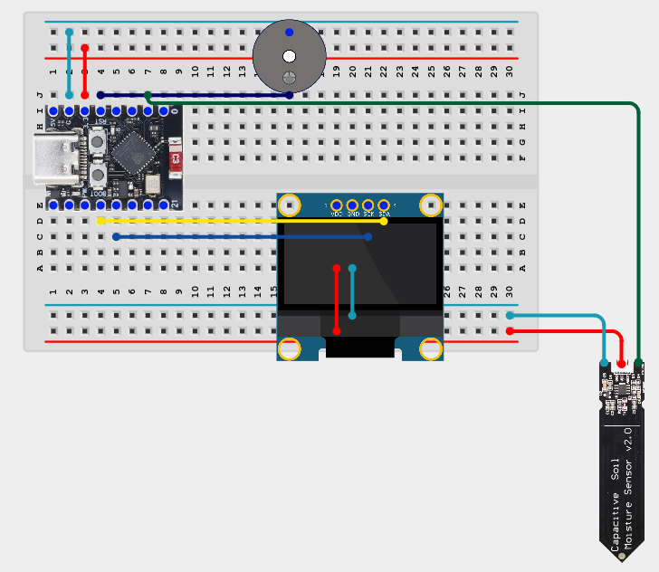

🌿 Meu progresso
Realize as atividades, registre suas medições e marque os experimentos concluídos.
0 de 5 atividades concluídas
🚀 Desafios avançados: opcionais
🌱 1. Conhecendo o sensor de umidade
O sensor capacitivo de umidade permite investigar a quantidade de água presente no solo.
Ele detecta alterações nas características elétricas do material próximo à sua região de medição.

Diferentemente de alguns sensores resistivos, o sensor capacitivo não depende de dois eletrodos metálicos expostos diretamente ao solo.
Isso ajuda a reduzir problemas associados à corrosão.
🔍 Como utilizar o sensor?
Observe a imagem abaixo. Ela identifica as regiões de utilização do sensor capacitivo.

Regiões de utilização do sensor. Clique na imagem para ampliar.
Região de medição: parte do sensor que pode ser inserida no solo.
Região eletrônica: contém os circuitos do sensor e deve permanecer protegida.
Conector: permite ligar o sensor ao ESP32-C3.
Nunca mergulhe a região eletrônica do sensor na água.
Respeite o limite indicado na imagem ao inserir o sensor no solo.
🌱 2. Montando e conectando o sensor
Vamos conectar o sensor capacitivo ao ESP32-C3 instalado na protoboard.
Utilizaremos três conexões: alimentação, referência elétrica e sinal analógico.
🔌 Observe a montagem

Montagem do sensor capacitivo com o ESP32-C3. Clique para ampliar.
Conexões utilizadas
| Sensor | ESP32-C3 | Função |
|---|---|---|
| VCC | 3V3 | Alimentação |
| GND | GND | Referência elétrica |
| AOUT / AO | GPIO1 | Sinal analógico |
1. Desconecte o cabo USB-C.
2. Identifique os terminais do sensor.
3. Conecte VCC ao 3V3.
4. Conecte GND ao GND.
5. Conecte a saída analógica ao GPIO1.
6. Peça à monitora para conferir a montagem.
7. Conecte o cabo USB-C.
Utilize alimentação de 3,3 V e confira a identificação dos terminais do sensor.
Nunca altere as conexões com o circuito energizado.
🌱 3. Descobrindo os valores do sensor
Chegou a hora de descobrir como o ESP32-C3 recebe informações do sensor!
O sensor produz um sinal elétrico analógico.
O ESP32-C3 transforma esse sinal em um número utilizando seu conversor analógico-digital, conhecido como ADC.
Com resolução de 12 bits, o ESP32-C3 pode apresentar 4096 valores diferentes.
Esses valores vão de 0 até 4095.
Nosso primeiro programa
// GlowUP Plant — Etapa 03
// Experimento 3: lendo o sensor de umidade.
// Define o pino conectado ao sensor.
const int PINO_SENSOR = 1;
void setup() {
// Inicia a comunicação serial
// na velocidade de 115200 baud.
Serial.begin(115200);
// Aguarda a inicialização.
delay(1500);
// Configura o ADC para 12 bits.
// Valores possíveis: 0 até 4095.
analogReadResolution(12);
}
void loop() {
// Realiza uma leitura analógica.
int valor = analogRead(PINO_SENSOR);
// Apresenta uma mensagem
// antes do valor medido.
Serial.print("Umidade - valor do sensor: ");
// Mostra o valor obtido.
Serial.println(valor);
// Aguarda um segundo.
delay(1000);
}
Como testar?
- Abra o Arduino IDE.
- Copie o programa.
- Grave o programa no ESP32-C3.
- Abra o Monitor Serial.
- Selecione 115200 baud.
- Observe os números apresentados.
Resultado esperado
Umidade - valor do sensor: 2840 Umidade - valor do sensor: 2836 Umidade - valor do sensor: 2848 Umidade - valor do sensor: 2842 ...
Valores ilustrativos. As leituras reais dependem do sensor e do ambiente.
🔍 Primeira observação
O valor apresentado permanece sempre igual?
Ou apresenta pequenas variações?
Essas diferenças fazem parte do processo de medição.
🌱 4. Investigando a umidade do solo
Agora vamos comparar as leituras do sensor em diferentes situações.
Utilize o mesmo programa do experimento anterior.
🔍 Realizando as medições
Primeiro, observe o sensor fora do solo.
Depois, insira a região de medição em solo seco.
Por último, realize uma medição em solo úmido.
Aguarde as leituras estabilizarem e registre um valor representativo de cada situação.
Molhe apenas o solo. Mantenha a água afastada do computador, da protoboard e da parte eletrônica do sensor.
Não mergulhe a placa do sensor em água.
📝 Registre suas descobertas
Digite os valores observados no Monitor Serial.
Os valores serão salvos automaticamente neste navegador.
✅ Confira suas observações
🧠 O que você descobriu?
Compare os valores registrados nas três situações.
O que aconteceu com a leitura quando o solo ficou úmido?
🌿 Resumo das suas medições
Fora do solo: —
Solo seco: —
Solo úmido: —
Registre suas medições para comparar os resultados.
🌱 5. Interpretando os resultados
Já sabemos que a leitura do sensor pode variar conforme a umidade do solo.
Agora vamos utilizar essas informações para criar mensagens que indiquem a condição da nossa planta.
Classificando a umidade
O programa abaixo utiliza duas referências:
valorSeco: leitura correspondente ao solo seco.
valorUmido: leitura correspondente ao solo úmido.
Utilize as medições registradas no experimento anterior.
No código, os valores 3000 e 1500 são apenas exemplos.
Substitua-os pelos valores medidos no seu experimento.
// GlowUP Plant — Experimento 5
// Objetivo: classificar a umidade do solo.
// Pino conectado ao sensor.
const int PINO_SENSOR = 1;
// Valores de EXEMPLO.
// Substitua pelas suas medições reais.
int valorSeco = 3000;
int valorUmido = 1500;
void setup() {
// Inicia a comunicação serial.
Serial.begin(115200);
delay(1500);
// Configura a resolução do ADC.
analogReadResolution(12);
}
void loop() {
// Realiza uma leitura do sensor.
int leitura = analogRead(PINO_SENSOR);
// Apresenta o valor.
Serial.print("Leitura: ");
Serial.println(leitura);
// Verifica se a calibração é válida.
if (valorSeco == valorUmido) {
Serial.println("Confira a calibracao!");
delay(2000);
return;
}
// Converte a leitura para porcentagem.
// Funciona também quando a ordem
// das referências é invertida.
int umidade = map(
leitura,
valorSeco,
valorUmido,
0,
100
);
// Limita o resultado entre 0 e 100%.
umidade = constrain(umidade, 0, 100);
// Mostra a porcentagem.
Serial.print("Umidade relativa: ");
Serial.print(umidade);
Serial.println("%");
// Classifica a medição.
if (umidade < 30) {
Serial.println("Solo seco!");
}
else if (umidade < 70) {
Serial.println("Umidade intermediaria.");
}
else {
Serial.println("Solo umido!");
}
// Aguarda dois segundos.
delay(2000);
}
A função map()
transforma a leitura em uma
escala de 0 a 100.
A função constrain()
impede que o resultado
fique fora dessa escala.
As instruções if,
else if e
else permitem
tomar decisões.
A porcentagem apresentada é uma escala relativa às referências utilizadas.
Ela não representa uma medição direta do teor de água no solo.
Os limites de 30% e 70% são exemplos didáticos.
🚀 Desafios avançados
Agora vamos utilizar programação para melhorar nossas medições.
Os programas estão incompletos. Você deverá completar as instruções identificadas por TODO.
Copie o programa, complete as partes que faltam e tente executar.
Se encontrar dificuldades, você poderá consultar a solução.
Mas tente resolver primeiro!
🚀 Desafio A — Calculando a média
As leituras do sensor podem apresentar pequenas variações.
Vamos calcular a média de cinco leituras consecutivas.
// GlowUP Plant — Desafio A
// Objetivo: calcular a média de cinco leituras.
const int PINO_SENSOR = 1;
void setup() {
Serial.begin(115200);
delay(1500);
analogReadResolution(12);
}
void loop() {
// Variável que acumula as leituras.
int soma = 0;
// TODO 1:
// Complete o número de repetições.
for (int i = 0; i < _____; i++) {
// TODO 2:
// Adicione uma leitura à variável soma.
delay(100);
}
// TODO 3:
// Calcule a média das cinco leituras.
float media = 0;
Serial.print("Media: ");
Serial.println(media);
delay(1000);
}
// GlowUP Plant — Solução do Desafio A
const int PINO_SENSOR = 1;
void setup() {
Serial.begin(115200);
delay(1500);
analogReadResolution(12);
}
void loop() {
// Acumula as leituras.
int soma = 0;
// Repete cinco vezes.
for (int i = 0; i < 5; i++) {
// Realiza uma leitura e adiciona à soma.
soma = soma + analogRead(PINO_SENSOR);
// Pequena pausa entre as leituras.
delay(100);
}
// Divide a soma por cinco.
// 5.0 permite uma divisão com decimais.
float media = soma / 5.0;
Serial.print("Media: ");
Serial.println(media);
delay(1000);
}
🚀 Desafio B — Umidade em porcentagem
Vamos transformar a leitura do sensor em uma escala de 0% a 100%.
Utilize os valores de referência obtidos nos experimentos.
// GlowUP Plant — Desafio B
// Objetivo: representar a umidade de 0 a 100%.
const int PINO_SENSOR = 1;
// Substitua pelos valores medidos.
int valorSeco = 3000;
int valorUmido = 1500;
void setup() {
Serial.begin(115200);
delay(1500);
analogReadResolution(12);
}
void loop() {
// Realiza uma leitura.
int leitura = analogRead(PINO_SENSOR);
// TODO 1:
// Verifique se valorSeco e valorUmido
// são diferentes, para evitar erro
// durante o cálculo.
// TODO 2:
// Utilize map() para converter:
// valorSeco em 0%.
// valorUmido em 100%.
int umidade = 0;
// TODO 3:
// Utilize constrain()
// para limitar o valor entre 0 e 100.
Serial.print("Umidade: ");
Serial.print(umidade);
Serial.println("%");
delay(1000);
}
// GlowUP Plant — Solução do Desafio B
const int PINO_SENSOR = 1;
// Substitua pelos valores medidos.
int valorSeco = 3000;
int valorUmido = 1500;
void setup() {
Serial.begin(115200);
delay(1500);
analogReadResolution(12);
}
void loop() {
// Realiza uma leitura do sensor.
int leitura = analogRead(PINO_SENSOR);
// Evita uma calibração inválida.
if (valorSeco == valorUmido) {
Serial.println("Erro de calibracao!");
delay(1000);
return;
}
// Converte a leitura para porcentagem.
int umidade = map(
leitura,
valorSeco,
valorUmido,
0,
100
);
// Limita a porcentagem entre 0 e 100.
umidade = constrain(umidade, 0, 100);
Serial.print("Umidade: ");
Serial.print(umidade);
Serial.println("%");
delay(1000);
}
🚀 Desafio C — Alerta de solo seco
Vamos criar um programa que apresenta uma mensagem quando a umidade fica abaixo de 30%.
Esse valor é apenas um exemplo para nosso experimento.
// GlowUP Plant — Desafio C
// Objetivo: criar um alerta de solo seco.
const int PINO_SENSOR = 1;
// Substitua pelas referências medidas.
int valorSeco = 3000;
int valorUmido = 1500;
// Limite didático para o alerta.
const int LIMITE_SECO = 30;
void setup() {
Serial.begin(115200);
delay(1500);
analogReadResolution(12);
}
void loop() {
int leitura = analogRead(PINO_SENSOR);
// Confere as referências.
if (valorSeco == valorUmido) {
Serial.println("Erro de calibracao!");
delay(1000);
return;
}
// Converte para porcentagem.
int umidade = map(
leitura,
valorSeco,
valorUmido,
0,
100
);
umidade = constrain(umidade, 0, 100);
Serial.print("Umidade: ");
Serial.print(umidade);
Serial.println("%");
// TODO 1:
// Crie uma condição para verificar
// se umidade é menor que LIMITE_SECO.
// TODO 2:
// Se estiver abaixo do limite, apresente:
// "Atencao! Sua planta precisa de agua!"
// TODO 3:
// Caso contrário, apresente:
// "Umidade adequada."
delay(2000);
}
// GlowUP Plant — Solução do Desafio C
const int PINO_SENSOR = 1;
// Substitua pelas referências medidas.
int valorSeco = 3000;
int valorUmido = 1500;
// Limite didático.
const int LIMITE_SECO = 30;
void setup() {
Serial.begin(115200);
delay(1500);
analogReadResolution(12);
}
void loop() {
int leitura = analogRead(PINO_SENSOR);
// Confere as referências.
if (valorSeco == valorUmido) {
Serial.println("Erro de calibracao!");
delay(1000);
return;
}
// Converte para porcentagem.
int umidade = map(
leitura,
valorSeco,
valorUmido,
0,
100
);
umidade = constrain(umidade, 0, 100);
Serial.print("Umidade: ");
Serial.print(umidade);
Serial.println("%");
// Verifica se a umidade
// está abaixo do limite.
if (umidade < LIMITE_SECO) {
Serial.println(
"Atencao! Sua planta precisa de agua!"
);
}
else {
Serial.println("Umidade adequada.");
}
delay(2000);
}
Todas as plantas precisam da mesma quantidade de água?
Como poderíamos adaptar o limite de alerta para diferentes espécies?
Você está aprendendo a transformar medições em informações úteis.
0 de 3 desafios avançados concluídos.
🌱 Sua jornada continua!
Complete os cinco experimentos iniciais.
← Voltar à oficina